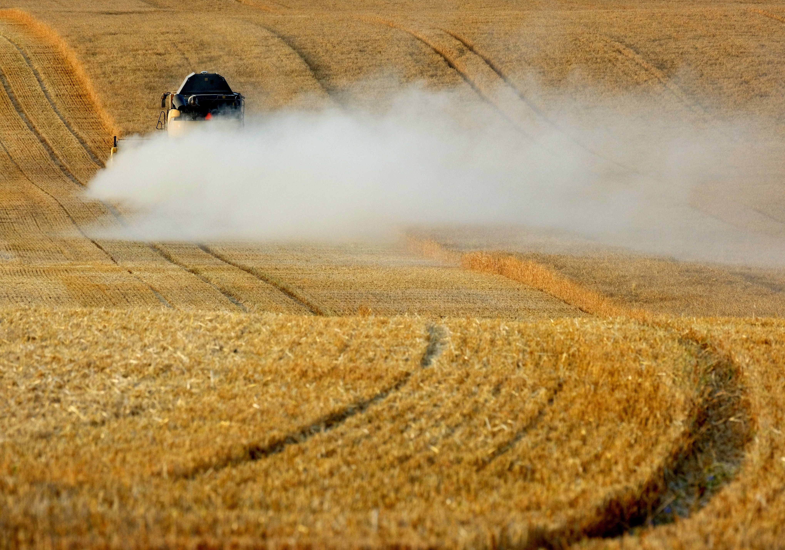
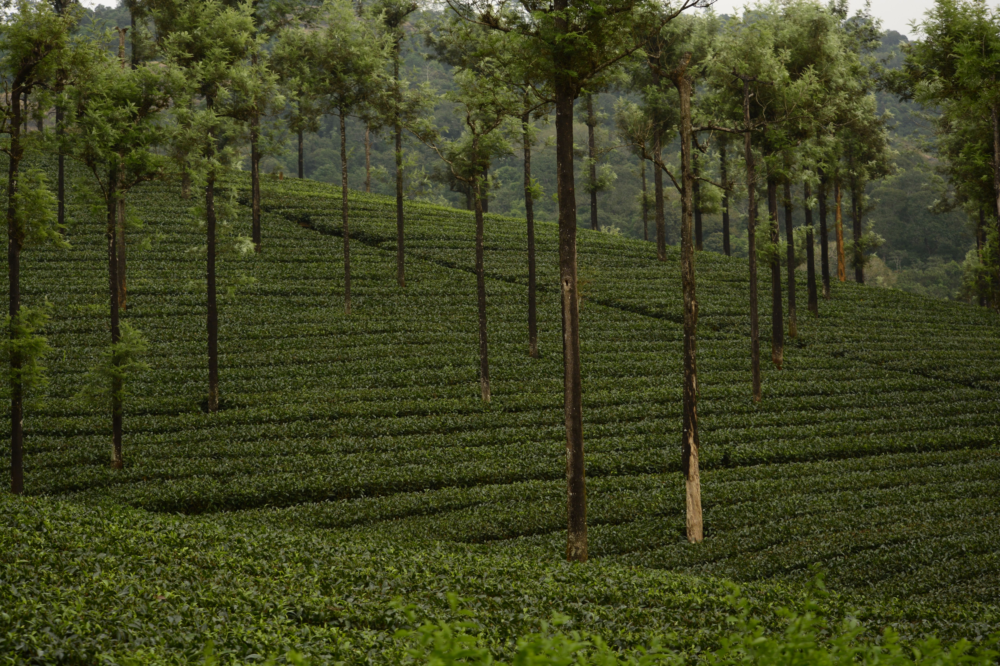

Main Causes of Deforestation
Deforestation is caused by farming, logging, mining, roads and cities expanding into forest areas. Millions of trees are cut down every year.
Deforestation happens because people need land, wood and natural resources. These activities destroy forests and wildlife habitats.
Deforestation is caused by farming, logging, mining, roads and cities expanding into forest areas. Millions of trees are cut down every year.
Forest lost in the last 30 years.
Trees are cut every minute.

Farms are one of the biggest causes of deforestation. Large forests are cleared to grow crops and raise animals.
Trees are cut for timber, paper and furniture. Some forests are logged faster than they can recover.


Forest fires destroy large areas of land. Some fires happen naturally while others are started by people.
Mining removes trees to reach valuable minerals. Roads and buildings are also built through forests.


Growing cities need more homes, roads and buildings. This causes forests to be cleared for development.